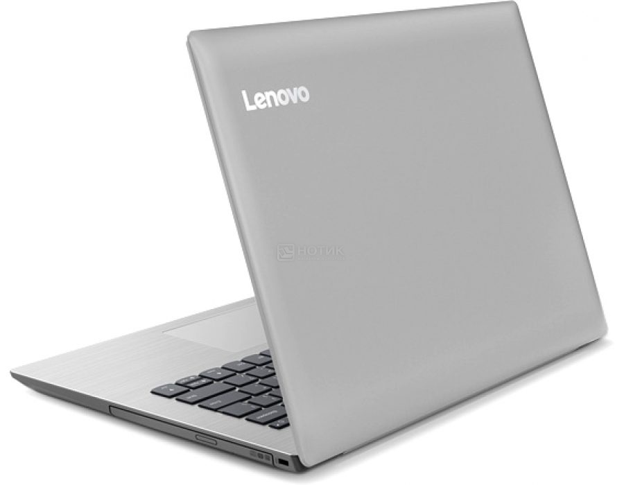

Lenovo
Ноутбук Lenovo IdeaPad 330-14, 81D5000LRU

Краткая информация о товаре
Lenovo IdeaPad 330-14 имеет процессор AMD E-Series E2-9000 (Stoney Ridge) 1.8 ГГц, а так же видеокарту AMD Radeon R2 series, в сочетании с 14.0 дюймовым экраном, пользователям доступны максимальные мультимедийные возможности. Ноутбук Lenovo IdeaPad 330-14, рассчитан на широкий круг аудитории, в том числе игровой и бизнес класса. На хранение данных и мультимедии отведен жесткий диск, емкостью 500 ГБ, это позволяет всегда иметь под рукой всю необходимую информацию и файлы, не зависимо от места нахождения. Автономная работа данной модели предполагает до 5 часов.
Характеристики ноутбука
- Процессор: AMD E-Series E2-9000 (Stoney Ridge) 1.8 ГГц
- Количество ядер: 2
- Кэш-память: 1 МБ
- Оперативная память: 4 ГБ DDR4-1866 МГц
- Экран: 14" TN (LED) Матовый
- Разрешение: 1920x1080 Full HD
- Видеокарта: AMD Radeon R2 series, 64 МБ
- Звук: Dolby Audio
- Накопитель: 500 ГБ HDD (5400 об/мин.), Тип накопителя: HDD
- Связь: LAN 10/100
- Беспроводная связь: Bluetooth 4.1, WiFi (802.11 b/g/n/ac)
- Порты: 1 x USB 2.0, 1 x USB 3.0, Kensington security, Line-out, Mic-in, HDMI
- Слоты расширения: Картридер SD/SDHC/SDXC/MMC
- Дополнительные устройства: Камера 0.3 Мп
- Устройства ввода: Клавиатура Windows, Тачпад
- Цвет: Серый
- Цвет клавиатуры: Черный
- Материал корпуса: Пластик
- Материал крышки: Пластик
- Размеры корпуса: 33.8 x 25 x 2.3 см
- Вес: 2.100 кг
- Батарея: Литий-ионная, емкость - 3900 мАч (до 5 ч)
- Операционная система: MS Windows 10 Home (64-bit)
ВСЕ ПРАВА ЗАЩИЩЕНЫ